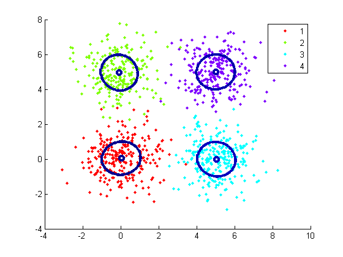
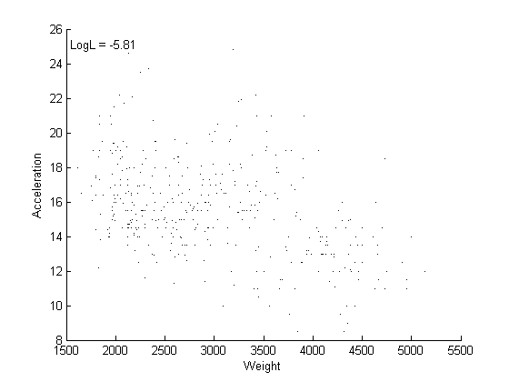
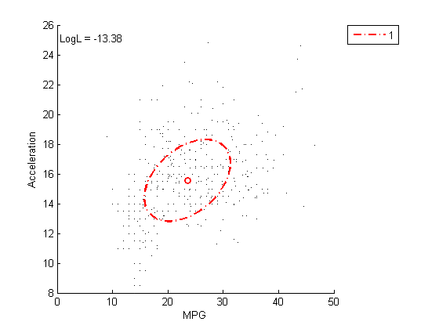
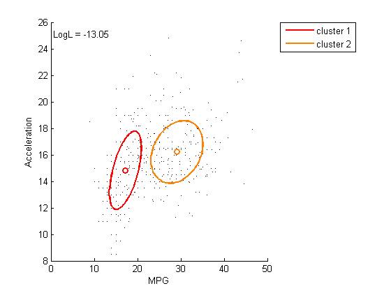
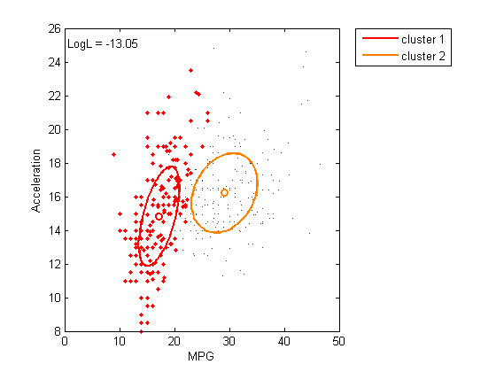

Contents
- Mixture of Multivariate Guassians Tutorial
- Multivariate Guassians
- Multivariate Mixtures
- Modeling Mixtures (simple)
- Modeling Mixtures (overlapping)
- Interactive Modeling
- Selecting viewing dimensions
- adding dimensions
- Adding clusters
- Deleting clusters
- Moving a cluster
- Naming a cluster
- Optimizing a fit
- Gating
- Getting/Setting current model from MMView
Mixture of Multivariate Guassians Tutorial
this tutorial describes multivariate guassians as it walks through the major functioniality of the mmvn toolkit
set(0,'defaultfigurecolor', 'w');
Multivariate Guassians
a multivariate guassian (or normal) distributino is a n-dimensional extension of a univariate guassian In a single dimension a normal distribution is the familiar bell-shaped curve. In two dimensions each variable is itself a normal distribution. If the two dimensions are independent then they tend to cluster as a circular cloud of points. if they are correlated then the form an ellipse. This can be extended to any number multiple dimensions
figure('pos', [352 354 808 604]); subplot(2,2,1); X = mmvn_gen( 1000, 0 ); % generate 1000 random points in 1d with mean 0 histfit(X); title('1d normal data'); subplot(2,2,2); [X idx theta] = mmvn_gen( 1000, [0 5] ); %generate 1000 random points in 2d with mean at (0,5) plot(X(:,1), X(:,2), '.' ); hold on; h = ellipse( theta.M, theta.V ); set(h,'color','r', 'linewidth', 2); title('uncorrelated 2d data'); subplot(2,2,3); V = [1 .7; .7 1]; [X idx theta] = mmvn_gen( 1000, [0 5], V ); %generate 1000 correlated points in 2d with mean at (0,5) plot(X(:,1), X(:,2), '.' ); hold on; h = ellipse( theta.M, theta.V ); set(h,'color','r', 'linewidth', 2); title('correlated 2d data'); subplot(2,2,4); V = [1 .7 0; .7 1 0; 0 0 1]; [X idx theta] = mmvn_gen( 1000, [0 5 0], V ); %generate 1000 correlated points in 3d with mean at (0,5,0) h = ellipse( theta.M, theta.V ); % 3d ellipses set(h(1),'facecolor','r', 'facealpha', .8); axis tight; hold on; grid on; set(gca,'projection', 'perspective'); plot3(X(:,1), X(:,2), X(:,3), '.', 'markersize', 1 ); title('correlated 3d data');

Multivariate Mixtures
If two or more sources are generating n-dimensional data that are mixed together you get a multivariate mixture. Often these are nearly gaussian or can be modeled by a mixture of gaussians. This is convient because the algorithms are easy and efficient.
figure % generate a mixture of 4 Gaussians each at one corner of a 5,5 square M = [ 0 0; 0 5; 5 0; 5 5]; [X idx theta] = mmvn_gen( 1000, M ); h = gscatter(X(:,1), X(:,2), idx ); colormap( cell2mat(get(h,'color') )); brighten(-1); hold on; h = ellipse( theta.M, theta.V ); set(h,'linewidth', 3);

Modeling Mixtures (simple)
In the above examples we knew the means and variance structure. What if we wanted to estimate the parameters instead. Assume for now that we know the number of data sources. with the above data this is easy because there are clearly distinct clusters
figure % generate a mixture of 4 Gaussians each at one corner of a 5,5 square M = [ 0 0; 0 5; 5 0; 5 5]; [X idx] = mmvn_gen( 1000, M ); Opt = mmvn_fit( X, 4 ); % fit model gscatter(X(:,1), X(:,2), idx ); hold on; h = ellipse( Opt.M, Opt.V ); % show model fit set(h,'linewidth', 3);
Modeling Mixtures (overlapping)
This example is more challenging because the clusters overlap each other In fact I've drawn them without coloring by source to emphasize that the clusters are highly indistinct.
figure % generate a mixture of 4 Gaussians each at one corner of a 5,5 square M = [ 0 0; 0 2; 2 0; 2 2]; [X idx theta] = mmvn_gen( 1000, M ); Opt = mmvn_fit( X, 4 ); % fit model plot(X(:,1), X(:,2), '.' ); hold on; h = ellipse( Opt.M, Opt.V ); % show model fit set(h,'linewidth', 2); plot( M(:,1), M(:,2), 'r+', 'markersize', 8); % real centroids

Interactive Modeling
The mmvn_toolkit comes with some classes for interactive modeling of data. these are MModel, MMView and MMGate.
load carbig; % load data X = [MPG Acceleration Weight Displacement]; % response variables % build a linear model to remove missing values and get variable names glm = encode( X, 3, 1, MPG, Acceleration, Weight, Displacement ); mm = MModel( glm.y, 1:2 ); % start model building with 1 component in 2d v = MMView(mm, MMGate, glm.var_names); mmplot(v); % generate interactive plot

Selecting viewing dimensions
The xlabel and ylabel can be selecting by right clicking. A dropdown menu appears that lets you select which dimensions to view change the view dimensions to Weight and Acceleration. Below I do it programmatically for you, but go ahead and try it using the mouse. You should notice that the model ellipse disappears when any non-model dimensions are viewed.
v.dims = [3 2 ]; mmplot(v);
adding dimensions
While viewing the Weight dimension, right click anywhere in the plot, a context menu appears allowing you to add the x or y dimensions. Add the dimensions containting weight. Now the model contains MPG, Weight and Acceleration. I'll do this programmatically below, but please try it out on the graph
mm = setModelDims(mm,1:3);
v = MMView(mm, MMGate, glm.var_names);
mmplot(v); % generate interactive plot
 Adding clusters
while viewing model dimensions you can right click anywhere except an existing centroid to add a new cluster at that point. The point is defined by the viewed dimensions. The location in other dimensions is estimated. While viewing Weight and Acceleration right click near a gropu of points outside the ellipse and then click "add cluster"
mm = addCluster(mm, [29.125 16.219 2376.9] ); v = MMView(mm,MMGate, glm.var_names); mmplot(v);

Deleting clusters
right click on a centroid to bring up context menu and select "delete cluster" Try it by adding a third cluster and then deleting it. If you delete a cluster the ellipse turn dashed to show that the new parameters are not optimized. optimize again, and the ellipses should bounce back where the were in the optimized fit (assuming the global optimimum was found in both cases)
Moving a cluster
right click on a centroid and select "move..." then right click again where you want to move it and select "move x to ...", where x is the name of the cluster. If you move a cluster the ellipse turn dashed to show that the new parameterse are not optimized.
Naming a cluster
right click on a centroid and select "name..." to bring up a dialog. You can name clusters anything you want. Clusters with the same name are treated as one cluster for grouping (gating) in MMGate.
mm = setKnames( mm, {'cluster 1'; 'cluster 2'} );
v = MMView(mm,MMGate, glm.var_names);
mmplot(v);

Optimizing a fit
you can run the em algorithm by right clicking on an empty spot in the plot and then clicking "optimize". After you do this the ellipses change from dashed to solid to show that the fit is optimized. Also the loglikelihood shown in the upper left corner is updated with the new value. It will always increase (less negative) or stay the same when the em is run.
v = MMView(em(mm),MMGate, glm.var_names); mmplot(v);
Gating
gating is a name used in flow cytometry. It's used to select a subset of observations from a certain source. This is supported using the MMGate class. This is accessible by right clicking on a centroid and selecting the flyout menu for "gate". these are described in help MMgate try selecting a cluster and gate by "most likely" The selected points are visible in any dimension, whether it is in the model or not. If you look in the dimensions of Displacement and Acceleration there appears to be considerable selected points crossing into other clusters. This sometimes suggests the model would improve with an additional dimension or component
v.view = MMGate( 'inclusion', 'most likely', 2, 'cluster 1' ); v.ssize = 5; % emphasize the selected points mmplot(v);
Getting/Setting current model from MMView
Once you build a model interactively, you can get it from the figure you can manipulate the MMView object outside the figure and set it again. The example below shows how to get the selected data points from a view
v = get(gca,'userdata'); [i,x] = gate(v); % make changes to model or gate v.ssize = 3; % e.g. deemphasize selected points. set(gca,'userdata',v); % put it back into plot % data will be updated on next redraw. Force redraw by selecting % a dimension to redraw